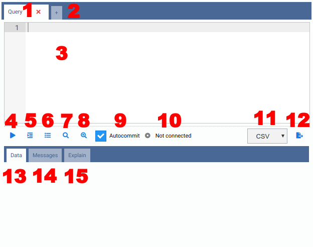
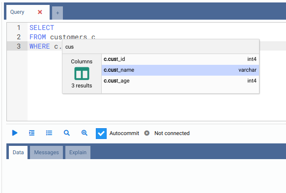
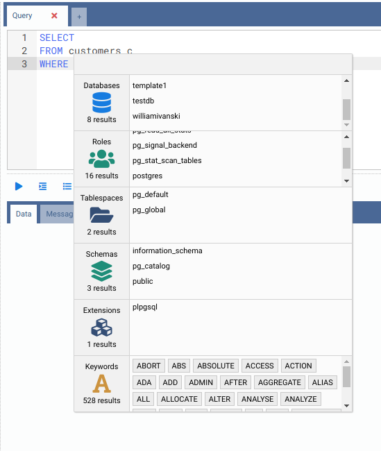
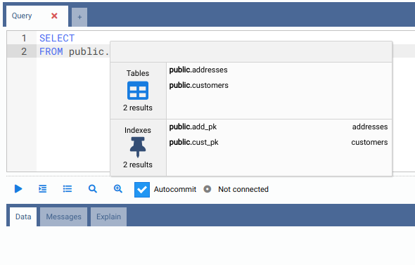

Escrever Consultas SQL
O tipo mais comum de separador interior é o Separador de Consulta, que contém os seguintes elementos:

- 1) Cabeçalho do Separador: Pode ver o nome do separador e um ícone para o fechar. Se houver uma consulta em execução no separador, verá um indicador. Se o separador terminar a execução e estiver a trabalhar noutro separador, verá um indicador verde. Ao clicar duas vezes no nome do separador, poderá mudar o nome do separador.
- 2) Adicionar Separador: Pode adicionar rapidamente outro separador interior clicando no ícone de mais.
- 3) Editor SQL: Editor SQL completo com realce de sintaxe SQL,
localizar e substituir (
Ctrl-FeCtrl-H) e um componente de autocompletar, explicado a seguir. Consulte Atalhos de Teclado do Editor para a lista completa de atalhos do editor (seleção, multicursor, navegação, dobragem de código, etc.). - 4) Execute (Executar): O texto contido no Editor SQL será executado na
base de dados atualmente ativa quando clicar neste botão (ou premir o atalho,
Alt-Qpor predefinição). Se houver algum texto selecionado no Editor SQL, será executado apenas o texto selecionado. Depois de o comando estar em execução, aparecerá um botão vermelho Cancel (Cancelar), permitindo-lhe cancelar a execução (ou usar o atalho,Alt-Cpor predefinição). - 5) Indent SQL (Indentar SQL): Este botão formata de forma legível qualquer código SQL escrito no
editor SQL (atalho
Alt-Spor predefinição,Ctrl-Sno macOS). - 6) Command History (Histórico de Comandos): Todos os comandos executados na base de dados atual são armazenados no Histórico de Comandos, ao qual pode aceder clicando neste botão. Também poderá filtrar por data e texto para encontrar o comando SQL que precisa.
- 7) Explain (apenas PostgreSQL): Chama a sua consulta SQL contra o PostgreSQL
colocando
EXPLAINà frente dela. Os resultados serão mostrados em forma textual e gráfica no separador Explain (consulte Visualizar Planos de Consulta para mais detalhes). - 8) Explain Analyze (apenas PostgreSQL): O mesmo que o botão Explain, mas
chama a consulta SQL com
EXPLAIN ANALYZE, que efetivamente executa a consulta. - 9) Autocommit (apenas PostgreSQL): Quando ativado, todas as consultas executadas serão submetidas (commit) na base de dados. Quando desativado, o OmniDB inicia uma transação e, após a execução de uma consulta, a interface mostrará botões que permitem ao utilizador efetuar Commit ou Rollback. O utilizador também pode manter a transação aberta e executar outros comandos.
- 10) Backend Status (Estado do Backend) (apenas PostgreSQL): Quando abre um novo Separador de Consulta, o estado é "Not Connected" (Não Ligado), porque o OmniDB ainda não iniciou um backend PostgreSQL. Quando executa a primeira consulta, o OmniDB inicia um novo backend e mantém-no associado ao Separador de Consulta (cada Separador de Consulta terá o seu próprio backend). O estado do backend (idle, active, idle in transaction, etc.) será mostrado neste campo. Quando fecha o Separador de Consulta, o OmniDB termina o backend.
- 11) Export File Type (Tipo de Ficheiro de Exportação): Pode ser CSV, TSV, XLSX, JSON, XML ou Markdown.
- 12) Export To File (Exportar para Ficheiro): Ao clicar neste botão, o OmniDB executa a consulta atual e exporta os resultados para um ficheiro. Na aplicação de ambiente de trabalho, abre-se um diálogo nativo "Guardar Como" para que possa escolher onde guardá-lo diretamente. Ao executar como OmniDB Server baseado no browser, o ficheiro é primeiro escrito na pasta temporária do servidor, e a interface mostra então uma ligação para que possa transferi-lo através do browser.
- 13) Data Results (Resultados de Dados): Se a consulta for um
SELECT, mostrará uma grelha com os resultados. Se a consulta for DML ou DDL, mostrará a mensagem devolvida pelo SGBD. - 14) Messages (Mensagens) (apenas PostgreSQL): Quaisquer mensagens (como as geradas pelo
comando
RAISE NOTICE) serão mostradas aqui. - 15) Explain View (apenas PostgreSQL): Mostra um componente completo para ver o plano de execução do PostgreSQL em forma textual ou gráfica.
Depois de executados, os separadores também são guardados na base de dados de utilizador do OmniDB (título e
conteúdo), pelo que da próxima vez que abrir o OmniDB, verá todos abertos novamente. Além disso,
todos os comandos que executar num Separador de Consulta são guardados no seu Histórico de Comandos e também
no ficheiro omnidb.log.
Autocompletar SQL
O editor SQL tem uma funcionalidade que ajuda muito ao criar novas consultas: conclusão
automática de código SQL. Com esta funcionalidade é possível autocompletar colunas
contidas numa tabela referenciada por um alias. Para abrir a interface de autocompletar
basta escrever o alias, o carácter . e depois premir Ctrl-Space:

Se o utilizador não iniciar o autocompletar com o cursor próximo de um alias de tabela, o componente mostrará várias categorias de dados. Ao escrever na caixa de filtro, os elementos em todas as categorias serão filtrados:

O componente de autocompletar também é capaz de identificar alguma informação contextual.
Por exemplo, se escrever o nome de um esquema, depois escrever o carácter ., e depois
premir Ctrl-Space, poderá filtrar entre objetos contidos apenas nesse
esquema:

Tenha em atenção que, para SGBD diferentes do PostgreSQL, o componente de autocompletar só funciona para colunas de tabelas.